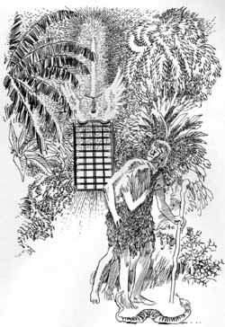
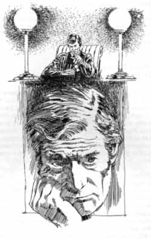

Original Sin Syllabus
Chapter 1
WITH WHOM DID SIN ORIGINATE?
1. Isa. 14:12-17; Ezek. 28:12-19; Rev. 12:9; John 8:44; PP 33-43; GC 433- 450; DA 19-26.
Isaiah 14:12-17 " How you are fallen from heaven, O Lucifer, son of the morning! How you are cut down to the ground, You who weakened the nations! 13 For you have said in your heart: 'I will ascend into heaven, I will exalt my throne above the stars of God; I will also sit on the mount of the congregation On the farthest sides of the north; 14 I will ascend above the heights of the clouds, I will be like the Most High.' 15 Yet you shall be brought down to Sheol, To the lowest depths of the Pit. 16 "Those who see you will gaze at you, And consider you, saying: 'Is this the man who made the earth tremble, Who shook kingdoms, 17 Who made the world as a wilderness And destroyed its cities, Who did not open the house of his prisoners?'
Ezekiel 28:12-19 "Son of man, take up a lamentation for the king of Tyre, and say to him, 'Thus says the Lord GOD: "You were the seal of perfection, Full of wisdom and perfect in beauty. 13 You were in Eden, the garden of God; Every precious stone was your covering: The sardius, topaz, and diamond, Beryl, onyx, and jasper, Sapphire, turquoise, and emerald with gold. The workmanship of your timbrels and pipes Was prepared for you on the day you were created. 14 "You were the anointed cherub who covers; I established you; You were on the holy mountain of God; You walked back and forth in the midst of fiery stones. 15 You were perfect in your ways from the day you were created, Till iniquity was found in you. 16 "By the abundance of your trading You became filled with violence within, And you sinned; Therefore I cast you as a profane thing Out of the mountain of God; And I destroyed you, O covering cherub, From the midst of the fiery stones. 17 "Your heart was lifted up because of your beauty; You corrupted your wisdom for the sake of your splendor; I cast you to the ground, I laid you before kings, That they might gaze at you. 18 "You defiled your sanctuaries By the multitude of your iniquities, By the iniquity of your trading; Therefore I brought fire from your midst; It devoured you, And I turned you to ashes upon the earth In the sight of all who saw you. 19 All who knew you among the peoples are astonished at you; You have become a horror, And shall be no more forever." ' "
Revelation 12:9 So the great dragon was cast out, that serpent of old, called the Devil and Satan, who deceives the whole world; he was cast to the earth, and his angels were cast out with him.
John 8:44 "You are of your father the devil, and the desires of your father you want to do. He was a murderer from the beginning, and does not stand in the truth, because there is no truth in him. When he speaks a lie, he speaks from his own resources, for he is a liar and the father of it.
2. "He [Christ] remembered the persistence and malice of Satan, who had boldly contended with the angels in heaven that his sentence was unjust, maintaining that there was no self-denial with God, and that Satan, in struggling to carry out his purpose and have his own way, was only imitating the example of God. If God followed His own will perfectly and continually, why should not the first son created in his image do so? By this argument Satan deceived many of the holy angels. He complained continually of God's severity, just as children sometimes complain of their parents' severity, in restraining them from carrying out plans destructive to the family government. Rather than submit to the will of God he turned from the light of reason, and set himself in opposition to the divine plan."-----ST, May 16, 1878.
WHAT IS SIN?
1. Sin is the spirit of lawlessness. It isn't just the act of lawlessness, but the spirit of lawlessness. Thus the RSV more correctly translates 1 John 3:4: "Sin is lawlessness." "... it is the outworking of a principle at war with the great law of love which is the foundation of the divine government."----GC 493.
"The same spirit that prompted rebellion in heaven still inspires rebellion on earth.... His [Satan's] spirit now reigns in the children of disobedience."----GC 500. He worked "to excite opposition to the law of God..."-----PP 38.
2. Sin is the spirit (or desire) of being independent of God.
"Satan was dependent on God for his life. He resolved to ignore this dependence..."----RH, April 16, 1901.
3. Sin is the spirit of self-originated "holiness."
"He [Satan] reiterated his claim that the angels needed no control, but should be left to follow their own will, which should ever guide them right."----GC 499.
Satan claimed that angels "needed no such restraint [as the will of God], for their own wisdom was a sufficient guide. They were not beings that could bring dishonor to God; all their thoughts were holy; it was no more possible for them than for God Himself to err."-----PP 37. Satan came to regard God's glory as pertaining to himself (PP 35).
PP 35 There was one who perverted the freedom that God had granted to His creatures. Sin originated with him who, next to Christ, had been most honored of God and was highest in power and glory among the inhabitants of heaven. Lucifer, "son of the morning," was first of the covering cherubs, holy and undefiled. He stood in the presence of the great Creator, and the ceaseless beams of glory enshrouding the eternal God rested upon him. "Thus saith the Lord God; Thou sealest up the sum, full of wisdom, and perfect in beauty. Thou hast been in Eden the garden of God; every precious stone was thy covering. . . . Thou art the anointed cherub that covereth; and I have set thee so: thou wast upon the holy mountain of God; thou hast walked up and down in the midst of the stones of fire. Thou wast perfect in thy ways from the day that thou wast created, till iniquity was found in thee." Ezekiel 28:12-15.
Little by little Lucifer came to indulge the desire for self-exaltation. The Scripture says, "Thine heart was lifted up because of thy beauty, thou hast corrupted thy wisdom by reason of thy brightness." Ezekiel 28:17. "Thou hast said in thine heart, . . . I will exalt my throne above the stars of God. . . . I will be like the Most High." Isaiah 14:13, 14. Though all his glory was from God, this mighty angel came to regard it as pertaining to himself. Not content with his position, though honored above the heavenly host, he ventured to covet homage due alone to the Creator. Instead of seeking to make God supreme in the affections and allegiance of all created beings, it was his endeavor to secure their service and loyalty to himself. And coveting the glory with which the infinite Father had invested His Son, this prince of angels aspired to power that was the prerogative of Christ alone.
Now the perfect harmony of heaven was broken. Lucifer's disposition to serve himself instead of his Creator aroused a feeling of apprehension when observed by those who considered that the [p. 36] glory of God should be supreme. In heavenly council the angels pleaded with Lucifer. The Son of God presented before him the greatness, the goodness, and the justice of the Creator, and the sacred, unchanging nature of His law. God Himself had established the order of heaven; and in departing from it, Lucifer would dishonor his Maker and bring ruin upon himself. But the warning, given in infinite love and mercy, only aroused a spirit of resistance. Lucifer allowed his jealousy of Christ to prevail, and became the more determined.
Note: Lucifer's proposal was not "Let us do evil," but "Let us do good----without God." But no creature has innate, self-originated holiness.
4. Sin is the spirit of selfishness.
"Sin originated in self-seeking. Lucifer, the covering cherub, desired to be first in heaven."----DA 21.
"... the spirit of selfishness is the spirit of Satan."----AA 339.
"Satan is the, originator of sin. In heaven he resolved to live for himself."-----RH, April 16, 1901.
"... disposition to serve himself instead of his Creator,..." -----PP 35.
See statement under Question, "With Whom did Sin Originate?" on page 6. Satan determined to have his own way (cf. Isa. 53:6).
Along with selfishness, sin may be called the spirit of self-exaltation and pride. "... he was filled with pride in his own glory," and "aspired to be equal with God."-----PP 36, 37.
"Little by little, Lucifer came to indulge the spirit of self-exaltation."----PP35.
5. Sin is the spirit of envy, jealousy, hatred and discontent. See SR 14; EW 145; GC 495-6, 8
6. Sin is the spirit of Deicide (murder of God).
(a) Implicit in Lucifer's desire to have God's place was the desire to get rid of God. Jesus said that Satan was a murderer from the beginning (John 8:44).
(b) "Lucifer himself did not at first see whither he was drifting; he did not understand the real nature of his feelings.... Satan must more fully develop his principles... The pent-up fires of envy and malice, hatred and revenge, burst forth on Calvary against the Son of God, while all heaven gazed upon the scene in silent horror."-----GC 496, 499, 501.
"At the cross of Calvary, love and selfishness stood face to face. Here was their crowning manifestation. Christ had lived only to comfort and bless, and in putting Him to death, Satan manifested the malignity of his hatred against God. He made it evident that the real purpose of his rebellion was to dethrone God, and to destroy Him through whom the love of God was shown."----DA 57.
"Satan saw that his disguise was torn away. His administration was laid open before the unfallen angels and before the heavenly universe. He had revealed himself as a murderer."----DA 761.
WHAT WAS THE NATURE OF MAN WHEN GOD CREATED HIM?
1. He was made in God's image: Gen. 1:27.
2. He was designed to be a temple for the indwelling of the Creator. 2 Cor. 6:16; 5:1-4; 1 Cor. 6:19; 3:16, 17; Lev. 26:11, 12; Exo. 25:8; DA 161; Ed 36.
2 Corinthians 6:16 And what agreement hath the temple of God with idols? for ye are the temple of the living God; as God hath said, I will dwell in them, and walk in them; and I will be their God, and they shall be my people.
2 Corinthians 5:1-4 For we know that if our earthly house of this tabernacle were dissolved, we have a building of God, an house not made with hands, eternal in the heavens. 2 For in this we groan, earnestly desiring to be clothed upon with our house which is from heaven: 3 If so be that being clothed we shall not be found naked. 4 For we that are in this tabernacle do groan, being burdened: not for that we would be unclothed, but clothed upon, that mortality might be swallowed up of life.
1 Corinthians 6:19 What? know ye not that your body is the temple of the Holy Ghost which is in you, which ye have of God, and ye are not your own?
1 Corinthians 3:16-17 Know ye not that ye are the temple of God, and that the Spirit of God dwelleth in you? 17 If any man defile the temple of God, him shall God destroy; for the temple of God is holy, which temple ye are.
Leviticus 26:11-12 I will set my Dwelling among you, and will not disdain you. 12 Ever present in your midst, I will be your God, and you will be my people;
Exodus 25:8 "They shall make a sanctuary for me, that I may dwell in their midst.
DA 161 "In the cleansing of the temple, Jesus was announcing His mission as the Messiah, and entering upon His work. That temple, erected for the abode of the divine Presence, was designed to be an object lesson for Israel and for the world. From eternal ages it was God's purpose that every created being, from the bright and holy seraph to man, should be a temple for the indwelling of the Creator. Because of sin, humanity ceased to be a temple for God. Darkened and defiled by evil, the heart of man no longer revealed the glory of the Divine One. But by the incarnation of the Son of God, the purpose of Heaven is fulfilled. God dwells in humanity, and through saving grace the heart of man becomes again His temple. God designed that the temple at Jerusalem should be a continual witness to the high destiny open to every soul. But the Jews had not understood the significance of the building they regarded with so much pride. They did not yield themselves as holy temples for the Divine Spirit. The courts of the temple at Jerusalem, filled with the tumult of unholy traffic, represented all too truly the temple of the heart, defiled by the presence of sensual passion and unholy thoughts. In cleansing the temple from the world's buyers and sellers, Jesus announced His mission to cleanse the heart from the defilement of sin,—from the earthly desires, the selfish lusts, the evil habits, that corrupt the soul. "The Lord, whom ye seek, shall suddenly come to His temple, even the Messenger of the covenant, whom ye delight in: behold, He shall come, saith the Lord of hosts. But who may abide the day of His coming? and who shall stand when He appeareth? for He is like a refiner's fire, and like fullers' soap: and He shall sit as a refiner and purifier of silver: and He shall purify the sons of Levi, and purge them as gold and silver."" Malachi 3:1-3 .
DA 36 " Through Christ was to be fulfilled the purpose of which the tabernacle was a symbol—that glorious building, its walls of glistening gold reflecting in rainbow hues the curtains inwrought with cherubim, the fragrance of ever-burning incense pervading all, the priests robed in spotless white, and in the deep mystery of the inner place, above the mercy seat, between the figures of the bowed, worshiping angels, the glory of the Holiest. In all, God desired His people to read His purpose for the human soul. It was the same purpose long afterward set forth by the apostle Paul, speaking by the Holy Spirit:
"Know ye not that ye are the temple of God, and that the Spirit of God dwelleth in you? If any man defile the temple of God, him shall God destroy; for the temple of God is holy, which temple ye are." 1 Corinthians 3:16, 17. "
WAS THE SIN OF MAN THE SAME AS THE SIN OF LUCIFER?
1. 1 John 3:8; John 8:44; Eph.2:1-3.
1 John 3:8 8 Whoever sins belongs to the devil, because the devil has sinned from the beginning. Indeed, the Son of God was revealed to destroy the works of the devil.
John 8:44 44 You belong to your father the devil and you willingly carry out your father's desires. He was a murderer from the beginning and does not stand in truth, because there is no truth in him. When he tells a lie, he speaks in character, because he is a liar and the father of lies.
Ephesians 2:1-3 You were dead in your transgressions and sins 2 in which you once lived following the age of this world, following the ruler of the power of the air, the spirit that is now at work in the disobedient. 3 All of us once lived among them in the desires of our flesh, following the wishes of the flesh and the impulses, and we were by nature children of wrath, like the rest.
2. It was Satan who tempted man to sin.
3. He insinuated his own spirit of unbelief and cruel distrust. "It was distrust of God's goodness, disbelief of His word, and rejection of His authority, that made our first parents transgressors..."----Ed 25.
4. He imbued man with his spirit of selfishness.
5. He imbued man with the spirit of self-originated "holiness. Satan told Eve she could be independent of God's will, and yet would not die; and that since she was holy, she would not sin by following her own impulses.
6. He filled her with the spirit of self-exaltation------the desire to be like God (Gen. 3:5 RSV; SR 34). Implicit in Lucifer's desire to have God's place was the desire to get rid of God. Calvary unfolds and establishes the terrible nature of sin. Adam and Eve also became guilty of the will to kill the Creator. "Thee change which had come in the thinking of Adam and the basis of this change is found in the sophistry of the serpent in which Adam trusted that it was indeed true that he would be God (Gen. 3:5, cf. margin). In this there was and is revealed the very root of sin. Obviously, there was no possible way for man to be God, unless he was able to get rid of God, or bluntly, to kill God. The reasonableness of this is clearly portrayed by Christ when He said that the devil `was a murderer from the beginning' (John 8:44 ). In its most elementary form, it simply means that Satan offered to man the prospect of getting rid of God, and man accepted the offer. Admittedly, man may not have consciously understood this, indeed probably did not understand it. This, however, does not alter the end result."-----D.K. Short, Cleansing of the Sanctuary, a thesis presented at the S.D.A. Theological Seminary, 1958.
7. "... man had sinned through yielding to the deceptions of this apostate spirit,..."----GC 500.
"Satan is the originator of sin.... he prevailed on Adam to sin.... Every sin committed awakens the echoes of the original sin."-----RH, April 16, 1901.
Note: Lucifer also was offered pardon through Christ, and his probation did not close until he fully committed himself against his Creator (GC 495-6; SR 17; PP 39). The same principle applies in the experience of man.
WHAT CHANGES TOOK PLACE IN ADAM'S NATURE THROUGH SIN?
Since the nature of man is two-fold (outward man and inward man), the fall affected both the organism and the heart of man.
1. When Adam misused the God-given powers of his organism, the process of degeneration of the human body with all its physical, mental, and moral powers, began to take place. The fall did not consist in a change of the faculties but a change in the employment of the faculties (RH, March, 1887, as quoted in Syllabus No. 3, p. 14). Through the fall, the seeds of decay and death were implanted in the human, body.
2. The fall of Adam's inward, spiritual nature was not a gradual fall. It was an immediate and absolute fall. In his innocence his spirit was in harmony with the Holy Spirit Who is the Spirit of love (4T 224). When Adam sinned, he cut himself off from the Holy Spirit and delivered his heart to be controlled by the spirit of Satan. —
(a) ".... selfishness took the place of love."----SC 17.
(b) "... the spirit of selfishness is the spirit of Satan."----AA 339.
(c) "Selfishness is the essence of depravity..."-----CS 24.
(d) "... selfishness became the law of those who placed themselves under his leadership."----RH, April 16, 1901.
(e) "... man had sinned through yielding to the deceptions of this apostate spirit,..."----GC 500.
(f) "When man transgressed the divine law, his nature became evil, and he was in harmony, and not at variance, with Satan."-----GC 505.
(g) "This will that forms so important a factor in the character of man, was at the fall given into the control of Satan." ----Testimony, No. 33, pp. 41-43 (GCB, 1895, p. 187).
(h) "They [Adam and Eve] both ate, and the great wisdom they obtained was the knowledge of sin and a sense of guilt." -----SR 37.
Note: The above statements concerning the change in man's nature pertain to the change of the human heart, the corruption of the human spirit, and the defilement of the human mind; i.e., the moral fall of the inward man.
HOW PERMANENT WAS THE ACQUIRED KNOWLEDGE OF EVIL DECREED TO BE?
1. The knowledge of evil would be man's portion throughout his probationary life (Gen. 3:17).
2. "God cursed the ground because of their sin in eating of the tree of knowledge, and declared, 'In sorrow shalt thou eat of it all the days of thy life.' He had apportioned them the good, but withheld the evil. Now He declares that they shall eat of it, that is, they should be acquainted with evil all the days of their life." ----SR 40.
3. "It was not the will of God that the sinless pair should know ought of evil.... But, contrary to His command, they had eaten of the forbidden tree, and now they would continue to eat of it-----they would have the knowledge of evil----all the days of their life. From that time the race would be afflicted by Satan's temptations."----PP 59.
4. "Where once was written only the character of God, the knowledge of good, was now written also the character of Satan, the knowledge of evil."----Ed 26.
5. "The result of the eating of the tree of knowledge of good and evil is manifest in every man's experience. There is in his nature a bent to evil, a force which, unaided, he can not resist."----Ed 29
SUMMARY
The spirit of selfishness, the law of sin and death, the character of Satan, the bent to evil, was impressed upon the nature of Adam. God said that his nature would bear this curse all the days of his probationary life. Continual repentance, confession, and sorrow for sin were to be his portion. The cursed ground, with its tendency to bring forth thorns and weeds, was to be a constant reminder of the sinful tendency of his own heart.
Chapter 2
ORIGINAL SIN ----INHERITED DEPRAVITY, INBRED SINFULNESS
HOW DID ADAM 'S SIN AFFECT HIS POSTERITY?
1. "... through the offence of one many be dead.... by one man's offence death reigned by one;... by the offence of one judgment came upon all men to condemnation;... by one man's disobedience many were made sinners,..." (Rom. 5:15 -19; see also 1 Cor. 15:21, 22).
2. "Satan is the originator of sin.... he prevailed on Adam to sin. Thus at its very source human nature was corrupted."-----RH, April 16, 1901.
IS THE GUILT OF ADAM 'S SIN IMPUTED TO HIS POSTERITY?
1. "The soul that sinneth, it shall die. The son shall not bear the iniquity of the father, neither shall the father bear the iniquity of the son: the righteousness of the righteous shall be upon him, and the wickedness of the wicked shall be upon him" (Ezek. 18:20 ).
2. "Visiting the iniquity of the fathers upon the children unto the third and fourth generation of them that hate me." It is inevitable that children should suffer from the consequences of parental wrong doing, but they are not punished for the parents' guilt, except as they participate in their sins."----PP 306.
WHAT DO WE INHERIT 'IN CONSEQUENCE OF ADAM 'S SIN?
1. We inherit a weakened and degenerate body; i.e. the whole human organism with its physical, mental, and moral powers.
(a) "For four thousand years the race had been decreasing in physical strength, in mental power, and in moral worth; and Christ took upon Him the infirmities of degenerate humanity."----DA 117.
(b) "But Jesus accepted humanity when the race had been weakened by four thousand years of sin. Like every child of Adam He accepted the results of the working of the great law of heredity."----DA 49.
(c) See also CG 422, 378; MH 130; MYP 68; 1SM 267-8. (Note: Physical, mental, and moral powers do not constitute character. 4T 606)
2. We inherit not only the degenerate outward man (the organism of the human body), but the sinful state of the inward man; i.e.., a selfish heart, a corrupted spirit, a wicked mind*.
(a) "Behold, I was shapen in iniquity; and in sin did my mother conceive me" (Psalm 51:5).
(b) "And you hath he quickened, who were dead in trespasses and sins; wherein in time past ye walked according to the course of this world, according to the prince of the power of the air, the spirit that now worketh in the children of disobedience: among whom also we all had our conversation in times past in the lusts of our flesh, fulfilling the desires of the flesh and of the mind; and were by nature the children of wrath, even as others".(Eph. 2:1-3).
(c) "That which is born of the flesh is flesh;..." (John 3:6). "... the carnal mind [literally, the mind of the flesh; i. e, the mind that we are born with] is enmity against God; for it is not subject to the law of God, neither indeed can be" (Rom. 8:7).
(d) inherited evil traits of.character;..."----6T 282. "There is every phase of character received by children as an inheritance."----FE 277-8.
(e) "Because of sin his [Adam's] posterity was born with inherent propensities of disobedience."-----5 BC 1128.
(f) "... original propensities of sin... in the heart..."----Ev 192.
(g) Speaking of the Christian's warfare, Ellen G. White says, "There is wrestling with inbred sin;..."----RH, Nov. 29, 1887.
(h) "The inheritance of children is that of sin. Sin has separated them from God."-----CG 475.
(i) A newborn child has not developed any thoughts, but the bent to evil and the propensities of disobedience are in the heart ready to manifest themselves. As surely as the oak tree is in the acorn, just so surely are all the actions of sin in the inherited sinful nature.
(j) A child does not become sinful by nature because he sins. He sins because he is sinful by nature. All who are born of the flesh are like the proverbial corrupt tree which cannot bring forth good fruit (Matt. 7:18). Even if one born of the flesh committed no act of sin he is still sinful; and he needs the merit of Christ's death to obtain salvation.
(k) The body itself is not inherently sinful (for Jesus inherited the degenerate human body). It is the "mind* or heart or spirit which is inherently sinful. Sin is a principle. It is the spirit of Satan----the spirit of lawlessness, the spirit of pride, the spirit of enmity, the spirit of selfishness, etc. It does not reside in the fabric of the human organism. It is not a virus in the blood stream. Sin is a spiritual force which has corrupted the human spirit,
* "Mind" is here used to denote the inward man of the heart as in Romans 7:22, 23, 25; 8:7; 12:2; and not the intellectual power.
THROUGH WHAT MEANS DO WE INHERIT A DEGENERATE ORGANISM?
1. This is a physiological or biological inheritance. Through the genes and chromosomes of the male and female reproductive cells (and perhaps other cellular properties of inheritance) we inherit our entire human organism.
2. Weakened physical, mental and moral powers (which do not constitute character----4T 606), strengthened appetites and bodily cravings, animal propensities, etc., are all transmitted biologically.
HOW DO WE INHERIT THE SINFULNESS-----THE CORRUPT PRINCIPLES, THE SPIRIT OF SELFISHNESS, THE LAW OF SIN AND DEATH, ETC.?
1. As the father of the race, Adam's action involved his entire family. What he did affected all men even though they were in no way responsible for his act of transgression. The fall consisted of two things: detachment and attachment. Adam severed his connection with the Holy Spirit and became an ally of the devil. Selfishness took the place of love. The spirit of Satan took the place of the Spirit of holiness. He sold himself to Satan.
2. Since Adam was the father of the race, his act of transgression separated the human race from the Holy Spirit. All of his children inherited this separation. This was not a biological inheritance but a legal inheritance, just as the inheritance of a father's debt or a father's fortune is not transmitted biologically but legally. Again, Adam sold himself to Satan. Consequently, his children inherited bondage to the devil. This bondage to the devil is not transmitted biologically but legally, just as the children of slaves were slaves by legal inheritance.
Further instances of the two different types of inheritance are as follows: A slave would have his ethnicity through biological inheritance, but bondage through legal inheritance. According to Christ's Object Lessons, p. 112, ideas are inherited, but certainly they are not transmitted in the genes and chromosomes. Neither is the actual sinfulness of the heart transmitted in the genes and chromosomes. But, due to the intimate relationship of mind and body, there is an intimate relationship between the biological (genetic) inheritance and the legal (sinful) inheritance. By way of illustration, the sin of impatience may be cited. Impatience has a definite effect upon the body. The effects of impatience are transmitted biologically. "It is inevitable that children should suffer from the consequences of parental wrong-doing..."-----PP 306.
The inherited bodily condition will predispose toward impatience. But such tendencies that are transmitted to the fabric of the human organism are not sinful. Then by legal (sinful) inheritance, the children are born without the Holy Spirit and with the spirit of Satan, the very spirit of impatience in their hearts. The biological inheritance is weakness. The Satanic inheritance is sinfulness.
3. The apostle Paul says, "I am carnal, sold under sin" (Rom. 7:14 ). We have all been sold under sin. Adam sold us. Satan and his evil angels have lawful claim to every child conceived and born in the natural course. Thus every son of Adam is born with the spirit of Satan in him. Not only does he have Adam for a father, but he is included among those of whom Jesus said, "Ye are of your father the devil..." (John 8:44). Adam's sin meant that we would all be born cut off from God and connected to Satan. This is why all men are sinners by nature (Eph. 2:1-3). Sinfulness, which is the spirit of Satan, is not a biological inheritance, but a satanic inheritance.
4. To summarize: the degenerate human organism is received by biological inheritance. Sinfulness of the human mind is received by legal inheritance.
(a) "The inheritance of children is that of sin. Sin has separated them from God."----CG 475.
(b) "Having conquered Adam, the monarch of the world, he [Satan] had gained the race as his subjects..."----RH, Feb. 24, 1874.
(c) "Through man's sin, Satan had gained control of the human race..."-----PP 77. "As a result of Adam's disobedience, every human being is a transgressor of the law, sold under sin... serving Satan."-----ST, July 23, 1902.
(d) "Children who have not experienced the cleansing power of Jesus are the lawful prey of the enemy, and the evil angels have easy access to them."-----CT 118. "Children are the lawful prey of the enemy..."-----RH Sept.19, 1854. (See Present Truth, 1968, No. 2, for a more exhaustive presentation of the nature of man, inheritance, etc.)
WHAT IS THE SPIRITUAL CONDITION OF EVERY ONE BORN OF THE FLESH?
1. "... every imagination of the thoughts of his heart [the whole purposes and desires of the heart] was only evil continually" (Gen. 6:5).
2. "The heart is deceitful above all things, and desperately wicked: who can know it?" (Jer. 17:9). "Desperately wicked," that is, inscrutably wicked, unsearchably sinful; so that no man could possibly understand the wickedness of his own heart. See Eccl. 8:11; 9:3; Mark 7:21-23.
3.... the carnal mind is enmity against God: for it is not subject to the law of God, neither indeed can be" (Rom. 8:7).
4. "And you hath he quickened, who were dead in.trespasses and sins" (Eph. 2:1).
5. "And you, that were sometime alienated and enemies in your mind by wicked works, yet now hath he reconciled" (Col. 1:21).
6. See Romans 3:9-23. "Do ye think that the scripture saith in vain, The spirit that dwelleth in us lusteth to envy?" "But every man is tempted, when he is drawn away of his own lust, and enticed. Then when lust hath conceived, it bringeth forth sin: and sin, when it is finished, bringeth forth death" (James 4:5; 1:14, 15)
7. All men are sinners. They are not just sinners by deed; they are sinners by nature. Sinfulness is a state of being. It is a state of separation, alienation, and enmity against God. The natural man is utterly unfit for fellowship with Him. Indeed, he finds no pleasure in Him, no delight in His fellowship, no joy in doing His will. God is not loved or enjoyed for what He is. The acts of disobedience are merely the fruit of this state of separation.
WHAT WAS THE REFORMATION'S EMPHASIS ON MAN 'S INBRED SINFULNESS?
1. In the fourth century A.D., Pelagius, an English monk, endeavored to explain the phenomena of universal sinfulness by propounding that the children merely follow.father Adam's bad example. He claimed that men could live righteously as Adam before the fall if they only refused to follow the sinful example of Adam. Augustine (354-430 A.D.), one of the great theologians of the church, refuted the Pelagian heresy by proving that all men are born sinners; i.e., that they have a depraved nature and a disposition to moral corruption even before they commit any actual sin. In spelling out this doctrine, he called this inherited sinfulness original sin,-----a term which has stuck to orthodox Christianity like the word Trinity.
However, Augustine went too far in setting forth the doctrine of original sin. He proposed that since the whole human race was in Adam when he sinned, then the actual guilt of Adam in eating the forbidden fruit belongs to the whole human family; that the taint of sinful corruption was transmitted from generation to generation through the sexual act of procreation.
2. Although Augustine became a Catholic saint, Catholicism gradually took on a mixture of Pelagian and Augustinian theology. In the Middle Ages the swing to Pelagianism was very evident in the multitudinous works to earn salvation, penance, indulgences, and the general trend of the people to increasingly depend on the church for salvation. Losing sight of their utter sinfulness of nature, people naturally put confidence in the flesh and imagined some sort of efficacy in good works.
3. The Reformation of the sixteenth century revived the doctrine of original sin, and the Reformers sought to weed out every trace of Pelagianism from their theology. All Reformers laid great stress on man's sinfulness of nature, against which they exalted the sovereign grace of God in man's redemption. With the Reformers, this was not a matter of pure theology, but a belief rooted in deep, personal knowledge of their own sinfulness and the greatness of God's grace.
It should be noted that the Reformers taught that man's inborn depravity is really sin. True, there was a minor difference among some of them as to the guilt of Adam's sin. Luther at first accepted the Augustinian view that all men are responsible for Adam's act in that all sinned in Adam. Zwingli denied the guilt part of original sin. All were united however in affirming man's inheritance of total depravity. By the term original sin they meant the sinful nature, the inbred corruption of heart, the inherited inclinations to sin, etc.
Luther's Statements on Original Sin
4. " 'Behold, I was conceived in iniquity, and in sin did my mother conceive me....'... he [the Psalmist] wraps up all of human nature as in one bundle and says, `I was conceived in sin.' He is not talking about certain actions but supply about the matter, and he says: `The human seed, this mass from which I was formed, is totally corrupt with faults and sins. The material itself is faulty. The clay, so to speak, out of which this vessel began to be formed, is damnable. What more do you want? This is how I am; this is how all men are. Our very conception, the very growth of the fetus in the womb, is sin, even before we are born and begin to be human beings.'
"... Thus the true and proper meaning is this: `I am a sinner, not because I have committed adultery, nor because I have had Uriah murdered. But I have committed adultery and murder because I was born, indeed conceived and formed in the womb, as a sinner.' So we are not sinners because we commit this or that sin, but we commit them because we are sinners first. That is, a bad tree and bad seed also bring forth bad fruit, and from a bad root only a bad tree can grow."
"... Thus before she gave him [the Psalmist] birth, his mother was nourishing a sinner with her blood in the womb. We should hold the same thing about everyone who is born, ever was born, or ever will be born into this world, except Christ. The fact that John the Baptist and others were sanctified in the womb (Luke 1:15) does not abolish the fact that they were conceived in sin, just as the flesh still remains wicked in adults who have been sanctified by the Spirit and faith.
"This doctrine of original sin is one of those outstanding doctrines which reason does not know, but which, like others, is learned from the Law and the promises of God...."
"This verse [Psalm 90:8] contains the reason why we all ought to confess that we are sinners, that all our efforts are damnable in the sight of God, and that God alone is righteous. This teaching is most necessary in the church; neither the pope nor the Turk believes it. I can testify from my own example that I did not yet know this teaching when I had been a doctor of theology for many years....
"... We need the Word of God from heaven to reveal this uncleanness or fault of our nature. With faith in this Word let us confess that this is the way things are, even though all nature should object, as object it must. This is the most difficult teaching of this psalm, yes, of all Scripture or theology. Without it, it is impossible to understand Scripture correctly, as the dreams of modern theologians prove."---- Luther's Works, Vol. 12, pp. 347-351.
5. "... it [original sin] is the proneness toward evil; the loathing of the good; the disdain for light and wisdom but fondness for error and darkness; the avoidance and contempt of good works but an eagerness for doing evil. As it is written in Ps. 14:3: `They are all gone out of the way, they are together become unprofitable.' And in Gen. 8:21: `The imagination and thought of man's heart are prone to evil.' God hates and imputes not merely this lack (inasmuch as many forget their sin and are not aware of it) but this whole sinful cupidity that causes us to disobey the commandment `You shall not covet' (Ex. 20:17), as the apostle shows in a very clear analysis farther on in the seventh chapter of this letter [Book of Romans]. For it is this commandment that shows us our sin, as the apostle says: `I had not known that concupiscence is sin except the law had said: You shall not covet' (Rom. 7:7).
"Accordingly, the ancient fathers were correct when they taught that it is this original sin which is the `tinder' of sin, the law of the flesh, the law of our members, the feebleness of nature, a tyrant, our original disease, etc. It is as with a sick man whose mortal illness is due to the fact that not merely one part of his body lost its health, but that his whole body is sick and that all his senses and powers are debilitated, so that, to cap it all, he is nauseated by what would be wholesome for him and consumed by the desire for what harms him...."----Luther, Lectures on Romans, in Library of Christian Classics, pp. 167, 168.
6. "Original sin is our inherited tendency to do that which is evil, and our disinclination and inability to do that which is good." ---- Luther's Small Catechism, p. 40.
7. "We must confess, as Paul says in Romans 5: 11, that sin originated from one man Adam, by whose disobedience all men were made sinners and subject to death and to the devil. This is called original or capital sin. The fruits of this sin are afterwards the evil deeds which are forbidden in the Ten Commandments, such as unbelief, false faith, idolatry, to be without fear of God, arrogance, blindness, and, to speak briefly, not to know or regard God, not to regard God's Word, to be disobedient to parents, to murder, to be unchaste, to steal, to deceive, etc. This hereditary sin is so deep a corruption of nature, that no reason can understand it, but it must be believed from the revelation of Scriptures. Ps. 51:5; Rom, 5:12 sqq.; Ex. 33:3; Gen. 3:7 sqq."------- Smalcald Articles, Part Three, Sec. 1, Book of Concord, Vol. 1, pp. 321 f.
The Augsburg [Protestant] Confession (1530 A.D.)
8. "Our churches, with common consent, do teach.... that since the Fall of Adam, all men begotten according to nature, are born with sin, that is, without the fear of God, without trust in God, and with concupiscence; and that this disease, or vice of origin is truly sin, even now condemning and bringing eternal death upon those not born again through baptism and the Holy Spirit....
"They condemn the Pelagians and others, who deny that the vice of origin is sin, and who, to obscure the glory of Christ's merits and benefits, argue that man can be justified before God by his own strength and reason."-----Quoted in Luther's Small Catechism, p. 90. See also GC 207.
Wesley on Original Sin
9. "I shall offer some reasons, why we should especially observe the sin of our nature:"
(a) Because, of all sins, it is the most extensive and diffusive. It goes through the whole man, and spoils all. Other sins mar particular parts of the image of God; but this defaces the whole. It is the poison of the old serpent cast into the fountain, and so infects every action, every breathing of the soul."
(b) It is the cause of all particular sins, both in our hearts and lives. `Out of the heart of man proceed evil thoughts, adulteries,' and other abominations. It is the bitter fountain; and the particular lusts are but rivulets running from it, which bring forth into the life a part only, not the whole, of what is within. "
(c) It is virtually all sins; for it is the seed of all, which want but the occasion to set up their heads. Hence it is called, `a body of death,' as consisting of the several members which constitute that `body of sins,' (Col. 2:11), whose life lies in spiritual death. It is the cursed ground, fit to bring forth all manner of noxious weeds. Never did every sin appear in the conversation of the vilest wretch that ever lived. But look into thy nature, and thou mayest see all and every sin in the root thereof. There is a fullness of all unrighteousness there;-------atheism, idolatry, adultery, murder. Perhaps none of these appear to thee in thy heart; but there is more in that unfathomable depth of wickedness than thou knowest. "
(d) The sin of our nature is of all sins the most fixed and abiding. Sinful actions are transient, 'though the guilt and stain of them may remain. But the corruption of nature passes not away. It remains in its full power, by night and by day at all times, till nature is changed by converting grace.
"You may observe three things in the corrupt heart:
(a) There is the corrupt nature, the evil bent of the heart,, whereby men are unapt for all good, and fitted for all evil.
(b) There are the particular lusts or dispositions of that corrupt nature, such as pride, passion, covetousness.
(c) There is one of these stronger than the rest------'the sin which doth so easily beset us.'
"The corruption of nature is the riverhead, which has many particular lusts wherein it runs; but it mainly disburdens itself into that which we call the predominant sin. But as in some rivers the main stream runs not always in the same channel, so the besetting sin may change, as lust in youth may be succeeded by covetousness in old age. Now what does it avail, to reform in other things, while the reigning sin retains its full power? What, if a particular.sin is gone? If the sin of our nature keep the throne, it will set up another in its stead,------as when a water-course is stopped in one place, it will break out in another. Thus some cast off their prodigality; but covetousness comes in its stead. Some quit their profaneness; but the same stream runs in the other channel of self-righteousness.
"That you may have a full view of the sin of your nature, I would recommend to you three things:
a. Study to know the spirituality and extent of the law of God; for that is the glass wherein you may see yourselves.
b. Observe your hearts at all times; but especially under temptation. Temptation is a fire that brings up the scum of the unregenerate heart.
c. Go to God through Jesus Christ, for illumination by His Spirit. Say unto Him, `What I know not, teach Thou me,' and be willing to take in light from the word. It is by the word that the Spirit teacheth; but unless He teach, all other teaching is little.purpose. You will never see yourselves aright, till He light His candle in your breast. Neither the fullness and glory of Christ, nor the corruption and vileness of your nature, ever were, or can be, rightly learned, but where the Spirit of Christ is the teacher.
"To conclude: Let the consideration of what has been said commend Christ to you all. Ye that are brought out of your natural state, be humble; still coming to Christ, still cleaving to Him, for the purging out what remains of your natural corruption. Ye that are yet in your natural state, what will ye do? Ye must die.... But come ye speedily to Jesus Christ. "-----Sermon in Bristol,.August 17, 1757, from The Works of John Wesley, Vol. IX, Zondervan, pp. 462-464.
HOW DOES THE SPIRIT OF PROPHECY HARMONIZE WITH THE REFORMERS' TEACHING ON ORIGINAL SIN?
We will see that the Spirit of Prophecy confirms the great Protestant emphasis concerning what the Reformers called original sin; but with this exception-----it denies the guilt part of original sin (see PP 306), which some of the Reformers denied too.
1. "Satan is the originator of sin.... he prevailed on Adam to sin. Thus at its very source human nature was corrupted. And ever since then sin has continued its hateful work, reaching from mind to mind. Every sin committed awakens the echoes of the original sin."-----RH, April 16, 1901.
2. "Without the transforming process which can come alone through divine power, the original propensities to sin are left in the heart 'in all their strength, to forge new chains, to impose a slavery that can never be broken by human power."----RH, Aug. 19, 1890.
3. "There is wrestling with inbred sin; there is warfare against outward wrong."----RH, Nov. 29, 1887.
4. "The inheritance of children is that of sin. Sin has separated them from God."----CG 475.
5. "Because of sin, his [Adam's] posterity was born with inherent propensities of disobedience."-----5BC 1128
6. "Inherited evil traits of character..."-----6T 282. Pride of heart is a fearful trait of character..."-----4T 377. "Evil tendencies of the heart..."-----Ed 111. "Thus it is with those whose hereditary and cultivated tendencies to wrong are not purged from them. Their hearts are not cleansed from defilement."-----4BC 1160.
7. "There is in the nature of man... a disposition to envy., jealousy and cruel distrust...."------3T 343. "In. the human heart there is natural selfishness and corruption...."------4T 496. "The carnal heart must be crucified; for its tendency is to moral corruption...."------5T 267. "The natural heart does not love to think of God, of heaven, or of heavenly things."------CG 533. "The natural heart is full of hatred to the truth, as it is to Jesus."-----ML 261. "The tendencies of the natural heart are downward."------4T 587.
8. "Our hearts are naturally sinful and slothful in the service of Christ...." ----- 2T 710. "... our hearts are naturally depraved...." ----CT 544. "The vileness of the human heart is not understood." --------MM 143. "In the unregenerate heart there is love of sin, and a disposition to cherish and excuse it."------GC 508. ".. . . ..the human heart is selfish, sinful and vicious."------RH, May 5, 1885.
WHY ARE WE FORBIDDEN TO JUDGE AND CONDEMN OTHER SINNERS?
See Romans 1:24-32; 2:1. The hearts of all are fashioned alike (Ps. 33:15). As long as the root of sin (inbred sinfulness) clings to our nature, the actual sins of all men who have ever lived are in our nature in the seed thereof. Therefore the sins of the whole world-----past, present, and future-----are in every man. Refer back to Wesley's comments in this chapter.
WHAT EVENT, ABOVE ALL OTHERS, DEMONSTRATES THE INSCRUTABLE WICKEDNESS OF THE HUMAN HEART?
1. The will to crucify the Lord of glory, and to keep crucifying Him eternally, is in the hearts of all men.
2. Only in the light of the cross of Calvary can the true nature of sin be discerned. Lucifer was the originator of sin. He coveted God's place on the throne of the universe (Isa. 14:13, 14). Implicit in his desire to have God's place was the will to get rid of God-----to kill Him. But even Lucifer did not at first understand the real nature of his feelings (GC 496). Jesus, however, declared that Satan "was a murderer from the beginning" (John 8:44 ). Calvary proved it. Christ had lived only to comfort and bless, and in putting Him to death, Satan manifested the malignity of his hatred against God. He made it evident that the real purpose of his rebellion was to dethrone God, and to destroy Him through whom the love of God was shown (DA 57). He had revealed himself as a murderer (DA 761).
3. The human race was also tempted to take God's place (Gen. 3:5 RSV). Therefore the heart of man is guilty of the same sin:
(a) "He that committeth sin is of the devil." (1 John 3:8).
(b) "The carnal mind is enmity [hatred] against God." ( Rom. 8:7).
(c) "Whoso hateth his brother [or God] is a murderer." (1 John 3:1).
(d) "Every sin committed awakens the echoes of the original sin."-----RH, April 16, 1901.
(e) "Upon all rests the guilt of crucifying the Son of God." -----DA 745.
(f) "By every sin Jesus is wounded afresh...."-----DA 300.
4. Although only Jews and Roman soldiers, participated in the act of putting Christ on the cross, the Word of God says that the hearts of all men are fashioned alike (Ps. 33:15). Those who condemn other sinners should realize that the same sin is in their own hearts ( Rom. 2:1). All sin has one common root and Calvary shows that it is the will to kill God.
5. The human mind is not conscious of its sin. Jesus prayed for His murderers, "Father, forgive them; for they know not what they do" (Luke 23:34 ). "That prayer of Christ for His enemies embraced the world. It took in every sinner that had lived or should live, from the beginning of the world to the end of time. Upon all rests the guilt of crucifying the Son of God."-----DA 745. So too, the apostle Peter charged the Jews that they had "killed the Prince of life... through ignorance" (Acts 3:14 -17). The will to kill God is not a conscious sin, but a sub-conscious sin. Calvary witnesses to the truth of the prophet's words: "Deep is a man's mind, deeper than all else, on evil bent; who can fathom it?" (Jer.17:9, Moffat). Ellen G. White says: "The vileness of the human heart is not understood."-----MM 14
6. Although man represses his sin into his sub-conscious mind-----for the full consciousness of sin would kill him-----the hidden content of the mind is revealed in the process of projection. This is the human mind's peculiar function of imputing its hidden guilt to another. Adam and Eve not only blamed each other for their sin, but they placed the blame upon God (Gen. 3:11-13). Guilt is the disposition to impute evil to God. Another remarkable illustration of projection is given by the children of Israel in the wilderness. Every time God brought them into strait places to test their hearts, they made the startling charge that God had it in His mind to kill them (Ex. 16:3; 17:3; Num. 14:3). This base accusation was merely a projection of their own attitude of God. Calvary proved it!
7. Guilt, man's disposition to impute the evil of his own heart to God, is the cause of all false doctrines which clothe the Creator in the evil characteristics of human nature. The supreme example of this is the doctrine of eternal torment. Where did men get the idea that God had it in His heart to take poor mortal man, and for the sins of a few brief years, thrust him into the pain of eternal torment? They got it from their own hearts. The doctrine of eternal torment is the result of the projection of human guilt. The disposition to perpetuate the crime of Calvary is hidden in the human heart
8. There is a respectable community of Christians called Laodicea (Rev. 3:14-21). They say, "I am rich and increased with goods, and have need of nothing." Christ replies sorrowfully, "Thou knowest not..." Significant words!----reminiscent of Christ's words to His people nearly two thousand years ago: "They know not what they do." "Blind!" says the True Witness as He renders the verdict of Laodicea's condition-----blind to the reality of the cross, blind to the great sin of ignorance which is to be dealt with on this Day of Atonement (Heb. 9:7 NEB).
9. Christ is speaking to us in the Laodicean message. That which we have failed to believe about our hearts, we are now acting out, and will act out to the full, unless we repent.
Chapter 3
ORIGINAL SIN IN JUSTIFICATION, REGENERATION, AND DAILY SANCTIFICATION
WHAT ARE WE TO UNDERSTAND BY TOTAL DEPRAVITY? HOW DOES IT RENDER ALL HUMAN EFFORT AND "GOOD WORKS" WHICH ARE PERFORMED APART FROM JESUS?
1. "Selfishness is the essence of depravity."-----CS 24.
2. It defiles every act of life, even the virtues of human goodness. "But we are all as an unclean thing, and all our righteousnesses are as filthy rags" (Isa. 64:6).
3. "He [man] has nothing of his own but what is tainted and corrupted, polluted with sin, utterly repulsive to a pure and holy God."------1SM 342.
4. "Why should ye be stricken any more? ye will revolt more and more: the whole head is sick, and the whole heart faint. From the sole of the foot even unto the head there is no soundness in it; but wounds, and bruises, and putrefying sores: they have not been closed, neither bound up, neither mollified with ointment" (Isa. 1:5, 6).
5. Total depravity does not mean that all good qualities or virtues are extinct in human nature; but it means that because of inbred sin, all these good qualities and virtues are polluted with the element of selfishness and sin.
HOW INCAPABLE IS A MAN OF TURNING TO RIGHTEOUSNESS WITHOUT CHRIST?
1. He is dead in trespasses and sin (Eph. 2:1).
2. He cannot repent (Acts 5:31; SC 26; 1SM 390, 393).
3. He cannot, indeed has no desire to, seek the Lord (Rom. 3:11 ).
4. "All who comprehend the spirituality of the law, all who realize its power as a detector of sin, are in just as helpless a condition as is Satan himself, unless they accept the atonement provided for them in the remedial sacrifice of Jesus Christ, who is our atonement------'at-one-ment-with' God."-----6BC 1077.
WHAT DID GOD DO FOR THE WHOLE HUMAN FAMILY IN CHRIST?
1. God took the initiative, gave us His Son, and made Him to be our righteousness. Just as human nature became separated from God and unrighteous in Adam, so human nature was united to God and made righteous in Christ. "Therefore as by the offence of one judgment came upon all men to condemnation; even so by the righteousness of one the free gift came upon all men unto justification of life. For as by one man's disobedience many were made sinners, so by the obedience of one shall many be made righteous" (Rom. 5:18, 19).
2. Humanity is forgiven, cleansed, restored, redeemed, and perfected in Christ. Study carefully the Pauline expression, "in Christ" (Rom. 3:24, 25; 1 Cor. 1:30; Eph.1:7-13; 2:1-17; Col.1:20-23; 2:9-15; Heb.1:3; 9:11, 12).
3. Great was the fall of man in Adam; but greater is the redemption and restoration which has been accomplished in Christ (Rom. 5:12 -20; 1 Cor 15:21, 22)
4. We were not responsible for the fall, and it happened without our aid. In the same way we were not responsible for human salvation that God wrought out in Christ. God perfected humanity in Christ without our aid. "The life which Christ offers us is more perfect, more full and complete than was the life which Adam forfeited by transgression."-----ST, June 17, 1897.
HOW MAY THE SINNER EXPERIENCE THE BLESSEDNESS OF JUSTIFICATION
1. God confronts the sinner with His love, and invites him to look upon the love of God shining from the cross of Calvary (John 3:14-17; John 1:29; Isa. 45:22).
2. The sinner, being made aware of his sin in the light of the law as it is illuminated by the cross, must recognize his utter sinfulness and helplessness (SC 28; 1SM 316; DA 745, 300).
3. He must choose to respond to the drawing of infinite love (Jer. 31:3; MB 104, 105, 113; DA 175, 176; ISM 323).
4. He must come to God through Christ just as he is-----helpless, sinful, and dependent ( Rom. 3 and 4; 1SM 332, 333).
5. As he responds to the drawing of the love of Christ the Lord gives him repentance toward God and faith in the Lord Jesus Christ (Acts 5:31; 2SM 20; Gal. 5:22 ).
6. He must rely solely upon the merits of Jesus Who has been made his righteousness, believing that for Christ's sake God will receive, pardon and justify the ungodly sinner who relies with his whole heart on the merits of Christ (Rom. 3 and 4).
7. It is God who justifies. He justifies (meaning, judges as righteous, pronounces as blameless) all who have faith in Christ as a personal Saviour. He imputes (reckons, ascribes) to the repentant, believing sinner, the perfect righteousness of Christ ( Rom. 3 and 4; 6BC 1070; SC 62; COL 163; I SM 394; SD 240; FLB 113).
WHAT GREAT EXPERIENCE ALWAYS ACCOMPANIES JUSTIFICATION BY FAITH?
1. The Bible writers speak of a great change produced in the heart Summary of the repentant sinner. It is called regeneration, conversion, the new birth, death of the old life and resurrection of the new life in Christ (John 3:3-6; Acts 3:19; Titus 3:5-8; Rom. 6:2; 2 Peter 1:4; Ps. 51; Ezek. 36:25-27; 2 Cor. 5:17; Eph. 4:23; Rom.12:1, 2).
2. "We should go to Jesus just as we are, confess our sins, and, cast our helpless souls upon our compassionate Redeemer. This subdues the pride of the heart, and is a crucifixion of self."------RH, March 5, 1889.
3. "The thought that the righteousness of Christ is imputed to us, not because of any merit on our part, but as a free gift from God, is a precious thought. The enemy of God and man is not willing that this truth should be clearly presented; for he knows that if the people receive it fully, his power will be broken."-----GW 161.
4. "God's forgiveness is not merely a judicial act by which He sets us free from condemnation. It is not only forgiveness for sin, but reclaiming from sin. It is the outflow of redeeming love that transforms the heart. David had the true conception of forgiveness when he prayed, `Create in me a clean heart, 0 God; and renew a right spirit within me.' And again he says, `As far as the east is from the west, so far hath He removed our transgressions from us.' "-----MB 114, comment on Luke 11:4.
5. See Sanctuary Institute Syllabus No. 2, pages 78-86 for a full outline on regeneration.
6. Justification is always accompanied by regeneration, which:
(a) breaks the controlling power of original sin in the heart. It no longer rules and reigns in the heart.
(b) imparts to the heart new tendencies, motives, and desires and makes the believer a partaker of the divine nature.
Did Luther teach that justification, regeneration, and the daily experience of sanctification eradicate Original Sin altogether???
1. "Original Sin, after regeneration, is like a wound that begins to heal, though it be a wound, yet it is in course of healing, though it still runs and is sore. So original sin remains in Christians until they die, yet itself is mortified and continually dying. Its head is crushed in pieces, so that it cannot condemn us." — Table Talk, p. 256
2. "So, if we believe that original sin has ruined us to such an extent that even in the godly, who are led by the Spirit, it causes abundance of trouble by striving against good. It is clear that in a man who lacks the Spirit nothing is left that can turn itself to good, but only to evil" --- John Dillenberger, Martin Luther, p. 203
3. "The lives and confessions of these [Paul, Jerome, Cyprian] and all saints prove the saying of St. Paul in Romans 7, 'I delight in the Law of God after my spirit, yet find in my members a contrary law of sin,' so that no one can deny that sin is still present in all the baptized and holy men on earth, and that they must fight against it" Works of Martin Luther, Vol. III, p. 17-19.
4. "Isaiah 64 says, 'We are all of us unclean, and all our righteousness is as a filthy stinking rag.' Observe that the prophet excepts nobody, but says 'we are all of us unclean,' and yet he was a holy prophet. Again, if our righteousness is unclean and a stench in God's nostrils, what will unrighteousness be? Moreover, he says 'all righteousness' none excepted. So then, if there is such a thing as a good work without sin, this prophet lies, which God forbid!! Is not this passage of Isaiah clear enough?"--- Ibid, p. 99.
5. "... the Scholastic theologians did not deal adequately with sin and grace. For they imagine that original sin, just like actual sin, is entirely taken away, as if sins were something that could be moved in the flick of an eyelash, as darkness is by light. The ancient holy fathers Augustine and Ambrose, however, dealt with these issues quite differently, namely, according to the method of Scripture. But the Scholastics follow the method of Aristotle in his Ethics, and he bases sinfulness and righteousness and likewise the extent of their actualization on what a person does. But Blessed Augustine said most plainly that 'in baptism sin (concupiscence) is forgiven, not in the sense that it is no longer there, but in the sense that it is not counted as sin'. . .
So then, this life is a life of cure from sin; it is not a life of sinlessness, as if the cure were finished and health had been recovered. The church is an inn and an infirmary for the sick and for the convalescents. Heaven, however, is the palace where the whole and the righteous live."---Luther: Lectures on Romans, pp. 128, 130.
DID WESLEY TEACH THAT. ORIGINAL SIN IS ERADICATED FROM THE HEARTS OF THE REGENERATE SAINTS?
1. "And as this position, there is no sin in a believer, no carnal mind, no bent to backsliding, is thus contrary to the word of God, so it is to the experience of his children. These continually feel a heart bent to backsliding, a natural tendency to evil, a proneness to depart from God, and cleave to the things of earth. They are daily sensible of sin remaining in the heart, pride, self-will, unbelief ; and of sin cleaving to all they speak or do, even their best actions and holiest duties Yet at the same time they `know that they are of God'; they cannot doubt it for a moment. They feel his Spirit clearly `witnessing with their spirit, that they are the children of God.'They 'rejoice in God through Christ Jesus; by whom they have now received the atonement.' So that they are equally assured, that sin is in them, and that `Christ is in them the hope of glory.' "----- Wesley's Sermons pp. 12, 13.
2. "Christ indeed cannot reign where sin reigns; neither will He dwell where any sin is allowed. But He is and dwells in the heart of every believer who is fighting against all sin; although it is not yet purified, according to the purification of the sanctuary." ----- Ibid., p. 13
3. "That believers are delivered from the guilt and power of sin we allow; that they are delivered from the being of it we deny." ----- Ibid., p.21.
4. "Repentance frequently means an inward change----a change of mind from sin to holiness. But we now speak of it in a quite different sense, as it is one kind of self-knowledge, the knowing ourselves sinners; yea, guilty, helpless sinners, even though we know we are the children of God."----- Ibid., p. 33.
5. "Indeed, when we first know this, when we first find redemption in the blood of Jesus, when the love of God is first shed abroad in our hearts, and His kingdom set up therein, it is natural to suppose that we are no longer sinners; that all our sins are not only covered, but destroyed. As we do not then feel any evil in our hearts, we readily imagine none is there. Nay, some well meaning men have imagined this not only at that time, but ever after, having persuaded themselves that when they were justified they were entirely sanctified; yea, they have laid it down as a general rule, in spite of Scripture, reason and experience. These sincerely believe, and earnestly maintain, that all sin is destroyed when we are justified, and that there is no sin in the heart of a believer; that it is altogether clean from that moment. But though we readily acknowledge `he that believeth is born of God,' and 'he that is born of God doth not commit sin,' yet we cannot allow that he does not feel it within; it does not reign but it does remain. And a conviction of the sin which remains in our heart is one great branch of the repentance we are now speaking of."----- Ibid., pp. 33, 34.
6. "Now where is he, even among those that seem strong in faith, who does not find in himself some degree of all these evil tempers? So that even these are but in part 'crucified to the world'; for the evil root still remains in their heart."----- Ibid., p. 38.
7. "We may, therefore, set it down as an undoubted truth, that covetousness, together with pride, and self-will and anger, remain in the hearts even of them that are justified."----- Ibid., p. 40
8. "And it is most certain, they are thus tar right; there does still remain, even in them that are justified, a mind which is in some measure carnal (so the apostle tells even the believers at Corinth, 'Ye are carnal'); a heart bent to backsliding, still ever ready to `depart from the living God'; a propensity to pride, self-will, anger, revenge, love of the world, yea, and all evil; a root of bitterness, which, if the restraint were taken off for a moment, would instantly spring up; yea, such a depth of corruption, as, without clear light from God, we cannot possibly conceive. And a conviction of all this sin remaining in their hearts is the repentance which belongs to them that are justified."----- Ibid., p. 41.
DOES THE SPIRIT OF PROPHECY SUPPORT THE REFORMATION DOCTRINE OF JUSTIFICATION BY FAITH ON THIS POINT; i.e. THAT ORIGINAL SIN (INBRED SIN) STILL REMAINS IN THE REGENERATE SAINTS?
1. "There is a wrestling with inbred sin; there is warfare against outward wrong."-----RH, Nov. 29, 1887.
2. "There must be a constant, earnest struggling of the soul against the evil imaginings of the mind."-----RH, June 12, 1888.
3. "When we lay hold of Christ by faith, our work has just begun. Every man has corrupt and sinful habits that must be overcome by vigorous warfare."---- OHC 121.
4. "Constant war against the carnal mind must be maintained... ----2T 479.
5. "In the human heart there is a natural selfishness and corruption, which can only be overcome by most thorough discipline and severe restraint; and even then it will require years of patient effort and earnest resistance."----4T 496.
6. "The closer you come to Jesus, the more faulty you will appear in your own eyes; for your vision will be clearer, and your imperfections will be seen in broad and distinct contrast to His perfect nature. This is evidence that Satan's delusions have lost their power; that the vivifying influence of the Spirit of God is arousing you. No deep-seated love for Jesus can dwell in the heart that does not realize its own sinfulness. The soul that is transformed by the grace of Christ will admire His divine character; but if we do not see our own moral deformity, it is unmistakable evidence that we have not had a view of the beauty and excellence of Christ."----SC 64, 65.
7. "Every Christian will have a hard battle to fight with wrong habits. He must overcome his unbelief, his deformity of character, his inclination to self-indulgence. His long resistance of light, warnings, and appeals has left its mark upon his life...."-----RH, Jan. 13, 1891.
8. "A constant battle must be kept up with the selfishness and corruption of the human heart."-----5T 397.
9. "We must strive daily against outward evil and inward sin...." ----RH, May 30, 1882
WHAT ARE THE SCRIPTURAL DECLARATIONS AND EVIDENCES THAT SIN STILL DWELLS IN THE REGENERATE?
1. "For we know that the law is spiritual: but I am carnal, sold under sin. For that which I do I allow not: for what I would, that do I not; but what I hate, that do I. If then I do that which I would not, I consent unto the law ---- that it is good. Now then it is no more I that do it, but sin that dwelleth in me. For I know that in me (that is, in my flesh,) dwelleth no good thing: for to will is present with me; but how to perform that which is good I find not. For the good that I would I do not: but the evil which I would not, that I do. Now if I do that I would not, it is no more I that do it, but sin that dwelleth in me. I find then a law, that, when I would do good, evil is present with me. For I delight in' the law of God after the inward man: but I see another law in my members, warring against the law of my mind, and bringing me into captivity to the law of sin which is in my members. 0 wretched man that I am!!! Who shall deliver me from the body of this death? I thank God through Jesus Christ our Lord. So then with the mind I myself serve the law of God; but with the flesh the law of sin" (Rom 7:14 -25).
This passage must apply to a regenerate man for the following reasons:
(a) There is a logical order in the book of Romans. Paul has already dealt with the unregenerate, justification, and the changes of heart that attend justification.
(b) He abhors evil; whereas an unregenerate man "abhorreth not evil" (Ps. 36:4).
(c) He delights in the law of God after the inward man. See Psalms 119:72,113 and Psalm 1:1-3.
(d) He serves the law of God in his mind.
(e) Romans 7 is a warning to believers not to trust in the "flesh". If they recognize their sinfulness and continually seek deliverance, then the Spirit of life in Christ will make them free from the law of sin and death; i. e. sin will not reign.
Note: ---- Both Luther and Wesley took the position that Romans 7:14-25 was the confession of the regenerate. In his Lectures on Romans. pp. 200-216, Luther presents a powerful twelve-point argument to prove that this Scripture is the confession of the regenerate. For Wesley's comments, see pages 40, 41 of Repentance in Believers, in the Appendix.
2. "For there is no man that sinneth not (1 Kings 8:46; 2 Chr. 6:36 ).
3. "For there is not a just man upon earth, that doeth good, and sinneth not" (Eccl. 7:20.
4. "For in many things we offend all" (James 3:2)
HOW THEN ARE WE TO UNDERSTAND 1 JOHN 1:9 "IF WE CONFESS OUR SINS, HE IS FAITHFUL AND JUST TO FORGIVE US OUR SINS, AND TO CLEANSE US FROM ALL UNRIGHTEOUSNESS"?
A believer in Jesus has put away all actual (known) sin. He does not cherish sin, but continually dies to his sinful nature. He is cleansed of all his guilt, and through the imputed righteousness of Christ he is totally cleansed. Yet the process of purification must continue in his heart. Thus the context of 1 John 1:9 says: "If we continue and keep on walking in the light... the blood of Jesus Christ His Son continues and keeps on cleansing us from all sin" (1 John 1:7-9, literal. Greek sense) The repentant believer is cleansed from the guilt of sin's penalty and then begins to be cleansed from the power of sin in his life.
How did Luther express the paradox of a Christian being pure and yet impure?
"The saints in being righteous are at the same time sinners; they are righteous because they believe in Christ whose righteousness covers them and is imputed to them, but they are sinners because they do not fulfill the law* and are not without sinful desires. They are like sick people in the care of a physician: they are really sick, but healthy only in hope and in so far as they begin to be better, or, rather: are being healed, i.e. they will become healthy. Nothing can harm them so much as the presumption that they are in fact healthy, for it will cause a bad relapse." ----- Ibid., p. 208.
DOES THE SPIRIT OF PROPHECY TEACH THAT THE REGENERATE ARE PURE, YET IMPURE?
1. "In ourselves we are sinners, but in Christ we are righteous."----- loc. cit.
2. "Are you in Christ? Not if you do not acknowledge yourselves erring, helpless, condemned sinners."-----5T 48.
3. "So Peter and his brethren had been washed in the great fountain opened for sin and uncleanness.... Looking upon them, Jesus could say, 'Ye are clean.' "-----DA 646. Then, immediately following this declaration that they were clean, Jesus said Peter would deny Him: "Hidden in his [Peter's] heart were elements of evil that circumstances would fan into life."----DA 673.
4. "As the people of God afflict their souls before Him, pleading for purity of heart..."----5T 475. (Read the whole section for context which shows them to be the saints of the Lord).
5. "None of the apostles and prophets ever claimed to be without sin. Men who have lived the nearest to God, men who would sacrifice life itself rather than knowingly commit a wrong act, men whom God has honored with divine light and power, have confessed the sinfulness of their nature."-----AA 561.
6. "At every stage of development our life may be perfect...." ---- COL 65.
7. "The closer you come to Jesus, the more faulty you will appear in your own eyes; for your vision will be clearer, and your imperfections will be seen in broad and distinct contrast to His perfect nature."-----SC 64.
WHAT HAPPENS IN THE EXPERIENCE OF THOSE WHO, TAKING A WRONG VIEW OF 1 JOHN 1:9, IMAGINE THAT THEIR HEART IS ENTIRELY CLEAN?
Luther's Insight into the Laodicean Condition
1. "Even if we recognize no sin in ourselves, we must yet believe that we are sinners. This is why the apostle says: `I know nothing against myself, yet am not hereby justified' (1 Cor. 4:4). For as through faith the righteousness of God lives in us, so through faith, also sin is alive in us, i.e., by faith alone we must believe that we are sinners, for this is not obvious to us; indeed, quite often we are not even conscious of it. Therefore, we must stand in the judgment of God and believe him when he says that we are sinners, for he cannot lie. And. it must be so, although it is not evident, for `faith is the evidence of things not seen' (Heb. 11: 1) and rests content with the words of God alone. "The Kingdom of Christ that has been prophesied will consist of this very humility and judgment. For thus `he judges among the nations' (Ps. 110:6). And `There are set thrones for judgment' (Ps. 122:5), for we must continuously accuse, judge, and condemn ourselves and confess ourselves as evil in order that God may be justified in us. It is this same faith which speaks out of words like these: `Clean thou me from hidden faults. Who can disclose his errors?' (Ps. 19:12 ), and again: `Remember not the sins of my ignorance' (Ps. 25:7). Lectures on Romans, p. 81.
2. "Others, again, who regard, themselves as righteous, he causes to stand still, so that they become lukewarm and give up all longing for betterment (in accordance with what the book of Revelation says in ch. 3:14 about the angel of Laodicea)."----- Ibid, p. 121
HOW DOES WESLEY EXPRESS THE NICE BALANCE BETWEEN VICTORY OVER SIN AND RECOGNITION OF SIN IN BELIEVERS?
1 "Is there any sin in them that are born of God, or are they wholly delivered from it?"----- Wesley's Sermons, p. 3.
2. "Indeed some of these seem to carry the thing too far; so describing the corruption of heart in a believer, as scarce to allow that he has dominion over it, but rather is in bondage thereto; and by this means, they leave hardly any distinction between a believer and an unbeliever."---- Ibid., pp. 4, 5.
3. "The question is not concerning, outward sin, whether a child of God commit sin or no. We all agree and earnestly maintain, `He that committeth sin is of the devil.' We agree, `Whosoever is born of God doth not commit sin.' "---- Ibid. p. 7.
4. "We allow that the state of a justified person is inexpressibly great and glorious. He is born again, `not of blood, nor of the flesh, nor of the will of man, but of God.' He is a child of God, a member of Christ, an heir of the kingdom of heaven. `The peace of God, which passeth all understanding, keepeth his heart and mind in Christ Jesus.' His very body is a `temple of the Holy Ghost,' and a `habitation of God through the Spirit.' He is 'created anew in Christ Jesus,' he is washed, he is sanctified. His heart is purified by faith; he is cleansed `from the corruption that is in the world'; `the love of God is shed abroad in his heart by the Holy Ghost which is given unto him.' And so long as he walketh in love,' (which he may always do) he worships God in spirit and in truth. He keepeth the commandments of God, and doeth those things that are pleasing in His sight; so exercising himself as to `have a conscience void of offence towards God and towards man'; and he has power both over outward and inward sin, even from the moment he is justified."---- Ibid., pp. 7, 8.
5. "But was he not then freed from all sin, so that there is no sin in his heart? I cannot say this; I cannot believe it; because Paul says to the contrary."---- Ibid., p. 8.
6. "Christ indeed cannot reign where sin reigns; neither will He dwell where any sin is allowed. But He is and dwells in the heart of every believer who is fighting against all sin; although it be not yet purified, according to the purification of the sanctuary." ----- Ibid., p.13.
7. "That believers are delivered from the guilt and power of sin we allow; that they are delivered from the being of it we deny." ---- Ibid., p. 21.
8. "But though we readily acknowledge `he that believeth is born of God,' and `he that is born of God doth not commit sin,' yet we cannot allow that he does not feel it within; it does not reign, but it does remain. And a conviction of the sin which remains in our heart is one great branch of the repentance we are now speaking of."----- Ibid., p. 34.
WHY MUST IMMATURE CHRISTIANS BE WARNED AGAINST THE IDEA THAT THE NEW BIRTH ERADICATES ORIGINAL SIN ALTOGETHER?
Luther:
1. "Thus, we confess that we are sinners, and with our weeping, penitence, grieving, and tears we show that we are sinners also in our own eyes. As soon, namely, as such fear and uneasiness cease, the sense of security lays hold of us; and where security prevails, the divine decree of counting our sin to us is again in force, for God has decided that he will not impute sin to anyone who implores his mercy with fear and trembling."----- Lectures on Romans, p. 135.
2. "This foolish opinion [that there is no sin in the regenerate] has led to a most harmful deception: people who are baptized or have received absolution think that they are at once without sin; they become secure in the feeling that they have obtained righteousness and they do nothing because they are not conscious of any sin they should fight against and purge out under groaning and tears and with sorrowful effort."---- Ibid., p. 212.
Wesley:
3. "One argument more against this new unscriptural doctrine may be drawn from the dreadful consequences of it. One says, `I felt anger today.' Must I reply, `Then you have no faith'? Another says, `I know what you advise is good, but my will is quite averse to it.' Must I tell him, `Then you are an unbeliever, under the wrath and the curse of God'? What will be the natural consequence of this? Why, if he believe what I say, his soul will not only be grieved and wounded, but perhaps utterly destroyed, inasmuch as he will `cast away' that `confidence which bath great recompense of reward'; and having cast away his shield, how shall he `quench the fiery darts of the wicked one'? How shall he `overcome the world'?----seeing 'this is the victory that overcomes the world, even our faith.' He stands disarmed in the midst of his enemies, open to all their assaults. What wonder, then, if he be utterly overthrown; if they take him captive at their will; yea, if he fall from one wickedness to another, and never see good any more? I cannot therefore by any means receive this assertion, that there is no sin in a believer from the moment he is justified; first, because it is contrary to the whole tenor of Scripture; secondly, because it is naturally attended with the most fatal consequences, not only grieving those whom God hath not grieved, but perhaps dragging them into everlasting perdition."---- Wesley's Sermons, p. 14-16.
E. G. White:
4. "There are those who have known the pardoning love of Christ, and who really desire to be children of God, yet they realize that their character is imperfect, their life faulty, and they are ready to doubt whether their hearts have been renewed by the Holy Spirit. To such I would say, Do not draw back in despair. We shall often have to bow down and weep at the feet of Jesus because of our shortcomings and mistakes, but we are not to be discouraged. Even if we are overcome by the enemy, we are not cast off, not forsaken and rejected of God. No; Christ is at the right hand of God, who also maketh intercession for us. Said the beloved John, `These things write I unto you, that ye sin not. And if any man sin, we have an advocate with the Father, Jesus Christ the righteous.' And do not forget the words of Christ, `The Father Himself loveth you.' He desires to restore you to Himself, to see His own purity and holiness reflected in you. And if you will but yield yourself to Him, He that hath begun a good work in you will carry it forward to the day of Jesus Christ: Pray more fervently; believe more fully. As we come to distrust our own power, let us trust the power of our Redeemer, and we shall praise Him who is the health of our countenance. "The closer you come to Jesus, the more faulty you will appear in your own eyes; for your vision will be clearer, and your imperfections will be seen in broad and distinct contrast to His perfect nature."-----SC 64.
5. "But because this experience [of regeneration] is his, the Christian is not therefore to fold his hands, content with that which has been accomplished for him. He who has determined to enter the spiritual kingdom will find that all the powers and passions of unregenerate nature, backed by the forces of the kingdom of darkness, are arrayed against him. Each day he must renew his consecration, each day do battle with evil. Old habits, hereditary tendencies to wrong, will strive for the mastery, and against these he is to be ever on guard, striving in Christ's strength for victory." ----AA 476, 477.
HOW ' DOES LUTHER WARN AGAINST THE MISTAKEN ENTERPRISE OF BEING IN TOO GREAT A HASTE TO BE FREE FROM ORIGINAL SIN?
"Still others he [Satan] urges on to the foolish enterprise of trying to become pure and sinless saints. As long as they feel that they are sinful and that evil may unexpectedly overcome them, he keeps them in terror before the judgment, and fatigues their conscience almost to the point of despair. He senses what each individual's bent is and tries to tempt him accordingly. But because these people strive so fervently for righteousness, it is not easy to persuade them to try the opposite. So he deals with them in the following way: First he helps them in their project----with the result that they are much too quick in their attempt to get rid of all concupiscence. Then, when they find that they cannot accomplish their purpose, he makes them sad, dejected, despondent, desperate, and utterly upset in their conscience.
We are like a convalescent: if he is in too much of a hurry to get well, he runs the chance of suffering a serious relapse; therefore, he must let himself be cured little by little and he must bear it for a while that he is feeble. It is enough that our sin displeases us, even though it does not entirely disappear. Christ bears all sins, if only they displease us, for then they are no longer our sins but (big?), and his righteousness is ours in turn. Lectures on Romans, p.121.
"Others, again, are too pusillanimous. They sin in a different way. They are in too great a hurry to have the old leaven purged out in order to obtain perfect health. They would like to root out entirely even the internal sin, but when they find this to be impossible because they fall from time to time, they become sad and dejected and lose hope. Inasmuch as grace does not co-operate with their excessive zeal, they try, therefore, to make themselves entirely pure by their own good works----and are most miserably dashed down."---- Ibid., p. 136.
WHY DOES GOD LEAVE ORIGINAL SIN IN THE HEART OF THE REGENERATE?
1. "Cursed is the ground for thy sake" (Gen. 3:17; SR 40; PP 59; Ed 26, 29). Since the fall, character can only be formed by conflicts; and part of these conflicts is with the selfishness and corruption of the human heart.
2. It is not God's impotence that prevents Him from completely delivering the believer from all depravity in one instant of conversion. Rather, it is. God's wisdom that the believer is not delivered from all depravity instantly. It is faith which is counted for righteousness ( Rom. 4:3). Man's great sin is that he wants to live apart from God. He is so prone to forget his need of dependence upon Him. Therefore God allows the believer to be aware of the depravity of his nature in order that he may learn to put no confidence in the flesh, but rather develop an unshakeable faith in God. It will also give him some appreciation of the depth of the pit from which he has been dug that he may the more earnestly appreciate the preciousness of the Saviour (see DA 493).
Luther:
3. "Now it is this security which is the mother of hypocrites and causes hypocrisy. The reason why God leaves us in sin (of which we spoke), in the `tinder,' in concupiscence, is that he wants to keep us in fear of him and in humility so that we may always keep running to his grace, always fearful that we may sin, i. e., always praying that he does not impute our sin to us and that he does not let it get dominion over us. Indeed, we fall into sin precisely by having no fear, for this evil in us (i.e. security) is by itself sin since, because of it, we do not love God above everything."---- Lectures on' Romans, p. 135.
4. "But we should know that sin is left in the spiritual man for the exercise of grace, for the humiliation of pride, and for the restraint of presumptuousness... For if we do not earnestly endeavor to struggle against sin, we already have it, even though we have ceased to commit any sin for which we could be condemned. For we are not called to a life of ease but to labor against our passions. And they would not be without guilt (for they really are sins and damnable, indeed) unless God, in his mercy did not impute them to us. But, he does not impute them to those only who, invoking his grace, resolutely attack their faults, and fight, against them." ---- Ibid., p. 21
HOW CAN A BELIEVER KNOW THAT GOD "RECKONS HIM AS RIGHTEOUS IF HE STILL HAS ORIGINAL SIN IN HIM?
Luther's Comments:
(a) "But it is by the mercy of God that this evil, though it remains, is not reckoned to those who fervently call upon him to set them free."---- Lectures on Romans, p. 127.
(b) " `Blessed is the man who is being lightened of his crime, who is being covered to his sin. Blessed is the man to whom the Lord will not count his iniquity' (Ps. 32:1-2). The first term: `crime,' which is variously interpreted and in Hebrew is called ` pheshau ', ' I should understand as designating the work of sin. The second one 'sin,' 'which is called ` hata ' and practically everywhere interpreted as sin, I take to refer to the root-sin in us or to concupiscence for evil,"--- Ibid.; pp. 131, 132.
(c) "So then, it says first: "Blessed is the man who is being lightened of his crime,' i.e. who by grace 'is made free from the burden of his crime, namely,' the actual sin he has committed. But this is not enough, unless he is at the same time `covered to his sin,' i.e. unless the root-evil in him is not imputed to him as sin. His sin is covered when, though it is there, it cannot be seen----and what cannot be seen can also not be counted."------Ibid., p. 132.
(d) "What is meant is: Thou hast not imputed to me the unrighteousness that is in me on account of that certain radical and deep sin. `For this let everyone pray unto thee,' etc. (v. 6), i. e, for the unrighteousness of his sin. For all will confess that in reality they are unrighteous before thee on account of this sin. Therefore, thou wilt forgive them and, by covering their sin, not impute unrighteousness to them." --- Ibid., p. 139.
E. G. White:
3. "The Redeemer longed to create in him [the rich young ruler that discernment which would enable him to see the necessity of heart devotion and Christian goodness. He longed to see in him a humble and contrite heart, conscious of the supreme love to be given to God, and hiding its lack in the perfection of Christ." -----DA 519.
4. "We are not to be anxious about what Christ and God think of us, but about what God thinks of Christ our Substitute."----2SM 32-33.
ARE ALL GOOD WORKS DEFILED BY ORIGINAL SIN? IF SO, HOW DOES GOD ACCEPT THEM?
Luther:
1. "... experience shows that in every good we do there remains that concupiscence toward evil, and nobody is free from it, not even an infant a day old."---- Lectures on Romans, p. 127.
2. "For even good works that are done over against the resistance of the `tinder' and sensuality are not done with such intensity and purity as the law requires, since they are not done with one's whole powers but only with the powers of the spirit that resist the powers of the flesh. For this reason, we sin even if we do good, unless God covers this imperfection through Christ and does not impute it to us because of our faith and the humble prayer that this imperfection be endured in Christ"--- Ibid., p. 143.
3. "Isaiah LXIV says, `We are all of us unclean, and all our righteousness is as a filthy stinking rag." Observe that the prophet excepts nobody, but says `we are all of us unclean,' and yet he was a holy prophet. Again, if our righteousness is unclean and a stench in God's nostrils, what will unrighteousness be? Moreover, he says, all righteousness,' none excepted. So, then, if there is such a thing as a good work without sin, this prophet lies, which God forbid! Is not this passage of Isaiah clear enough?"-----"An Argument in Defense of All the Articles of Dr. Martin Luther Wrongly Condemned in the Roman Bull,"------- Works of Martin Luther, Vol. III, p. 99.
Wesley:
4. "And as this position, there is no sin in a believer, no carnal mind, no bent to backsliding, is thus contrary to the word of God, so it is to the experience of his children. These continually feel a heart bent to backsliding, a natural tendency to evil, a proneness to depart from God, and cleave to the things of earth. They are daily sensible of sin remaining in the heart, pride, self-will, unbelief; and of sin cleaving to all they speak or do, even their best actions and holiest duties."----- Wesley's Sermons, p. 12.
E. G. White:
5. "The religious services, the prayers, the praise, the penitent confession of sin ascend from true believers as incense to the heavenly sanctuary, but passing through the corrupt channels of humanity, they are so defiled that unless purified by blood, they can never be of value to God. They ascend not in spotless purity, and unless the Intercessor, who is at God's right hand, presents and purifies all by His righteousness, it is not acceptable to God. All incense from earthly tabernacles must be moist with the cleansing drops of the blood of Christ. He holds before the Father the censer of His own merits, in which there is no taint of earthly corruption. He gathers into this censer the prayers, the praise, and the confessions of His people, and with these He puts His own spotless righteousness. Then, perfumed with the merits of Christ's propitiation, the incense comes up before God wholly and entirely acceptable. Then gracious answers are returned."----l SM 344.
6. "When it is in the heart to obey God, when efforts are put forth to this end, Jesus accepts this disposition and effort as man's best service, and He makes up for the deficiency with His own divine merit. But He will not accept those who claim to have faith in Him, and yet are disloyal to His Father's commandment. "----I SM 312.
7. "Christ looks at the spirit, and when He sees us carrying our burden with faith, His perfect holiness atones for our shortcomings. When we do our best, He becomes our righteousness. It takes every ray of light that God sends to us to make us the light of the world."---l SM 368.
8. This shows that we are not only completely dependent upon the power of Christ to do good works (which are the fruit of faith) but having done them in His strength, we are completely dependent upon Him to purify them and to make them acceptable to God.
HOW ONLY IS PERFECT OBEDIENCE POSSIBLE?
1. Salt must be added to every offering and sacrifice (Mark 9:49; DA 439).
2. "Man's obedience can be made perfect only by the incense of Christ's righteousness, which fills with divine fragrance every act of obedience."-----AA 532.
3. "Through the merits of Christ's imputed righteousness, the fragrance of such words and deeds is forever preserved"-------SD 270.
4. "Could they look into the censer of the angel that stands at the golden altar before the rainbow-circled throne, they would see that the merit of Jesus must be mingled with our prayers and efforts, or they are as worthless as was the offering of Cain. Could we see all the activity of human instrumentality, as it appears before God, we would see that only the work accomplished by much prayer, which is sanctified by the merit of Christ, will stand the test of the judgment. When the grand review shall take place, then shall ye return and discern between him that serveth God and him that serveth Him not."----Ch S 263.
5. "But that which God required of Adam in paradise before the fall, He requires in this age of the world from those who would follow Him,-----perfect obedience to His law. But righteousness without a blemish can. be obtained only through the imputed righteousness of Christ."-----RH, Sept. 3, 1901.
6. "Under the covenant of grace God requires from man just what He required in Eden-----perfect obedience. The believing sinner, through his divine Substitute and Surety, renders obedience to the law of God."-------ST, Sept. 5, 1892.
7. "Jesus is our great High Priest in heaven. And what is He doing? He is making intercession and atonement for His people who believe in Him. Through His imputed righteousness, they are accepted of God as those who are manifesting to the world that they acknowledge allegiance to God, keeping all His commandments."-------TM 37.
8. Note:
(a) The foundation of righteous living is imputed righteousness. "... good works are but the result of the working of His sin-pardoning love."---- SBC 1122.
(b) Imparted righteousness (the indwelling life of Christ) is that which provides the actual power for a life of obedience. (The more the believer depends upon the merits of Christ, the more he will receive of the imparted Life).
(c) Again: Imputed righteousness must make every act of obedience pure and acceptable, since it has passed through the corrupted channel of humanity. Thus imputed righteousness is not only the foundation of the building of Christian service; it is also the roof, or headstone.
Wesley:
"From what has been said, we may easily learn the mischievousness of that opinion, that we are wholly sanctified when we are justified; that our hearts are then cleansed from all sin. It is true, we are then delivered, as was observed before, from the dominion of outward sin; and, at the same time, the power of inward sin is so broken that we need no longer follow or be led by it; but it is by no means true that inward sin is then totally destroyed; that the root of pride, self-will, anger, love of the world, is then taken out of the heart; or that the carnal mind, and the heart bent to backsliding, are entirely extirpated."*---- Wesley's Sermons, p. 58.